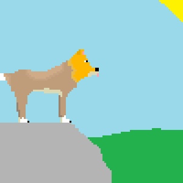

~8,000–3,500 Years Ago
Dingoes arrive in Australia, likely brought by seafaring people from Asia. They spread across most of mainland Australia.



Dingoes arrive in Australia, likely brought by seafaring people from Asia. They spread across most of mainland Australia.
For thousands of years, dingoes live alongside Aboriginal peoples and become deeply important in culture, stories, and daily life.
European settlers arrive in Australia and begin recording encounters with dingoes.
The first known written European record of a dingo is made near Sydney by early colonists.
The word “dingo” appears in published English writing for one of the first times.
Construction begins on the Dingo Fence to protect sheep from predation. It eventually becomes one of the longest fences in the world.
Large-scale poison baiting and lethal control increase across Australia as grazing expands.
Scientists begin recognising dingoes as ecologically important apex predators rather than just livestock pests.
Dingoes receive stronger management and conservation attention due to their genetic purity.
Queensland bans keeping pure dingoes as pets without permits, tightening legal protection and regulation.
Dingoes in north-west Victoria are listed as threatened under state law.
A major genetic study strengthens evidence that dingoes are distinct from domestic dogs.
DingoWatch, a website dedicated to dingo conservation and awareness, is established on the 17th of August.
Dingoes remain one of Australia’s most iconic predators, with ongoing debates about conservation, farming, and ecosystem management.
Explore the lighter side of dingoes! Play, colour, and learn in a fun way.
Print and colour your own dingoes. Great for kids—or the young at heart!
Get Colouring PagesDownload high-quality dingo images to use as your desktop or phone background.
Download WallpapersTest your knowledge! How much do you know about Australia’s wild dingoes?
Take the QuizSolve fun puzzles and play interactive games featuring dingoes.
Play GamesSign, share, donate, volunteer, and learn from trusted organisations and sources.
Join a community-led push to protect dingoes in the Wet Tropics region. Add your name and share to boost visibility.
Sign the PetitionYour contribution powers sanctuary care, vet treatment, and education programs.
Hands-on help keeps pure dingoes safe and educates the public.
Understanding dingoes’ ecological role helps shift policy and public attitudes.
Encourage non-lethal strategies and recognition of dingoes as a native apex predator.